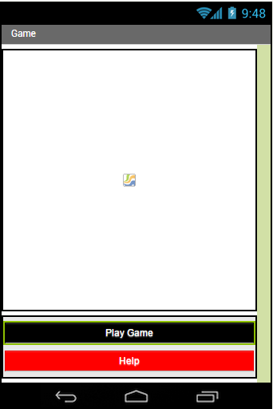
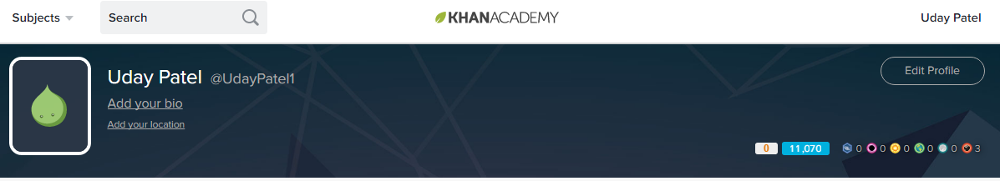
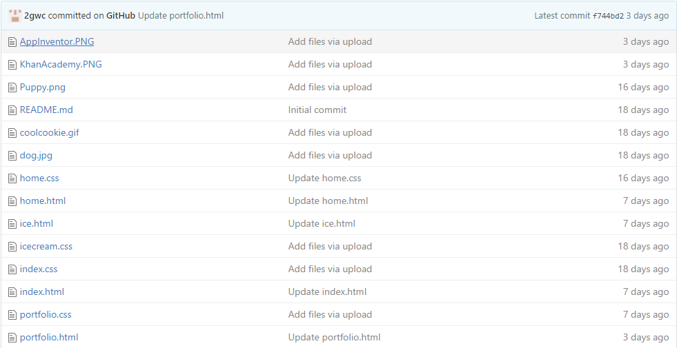
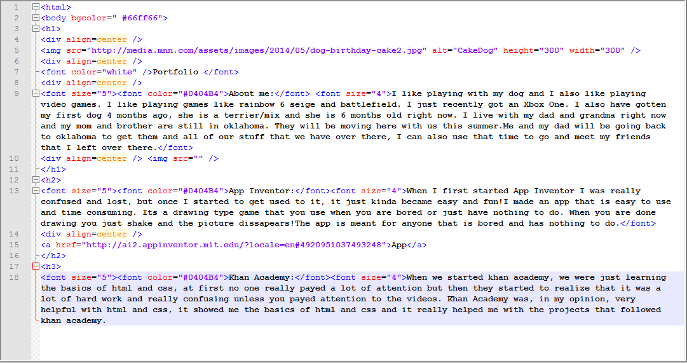
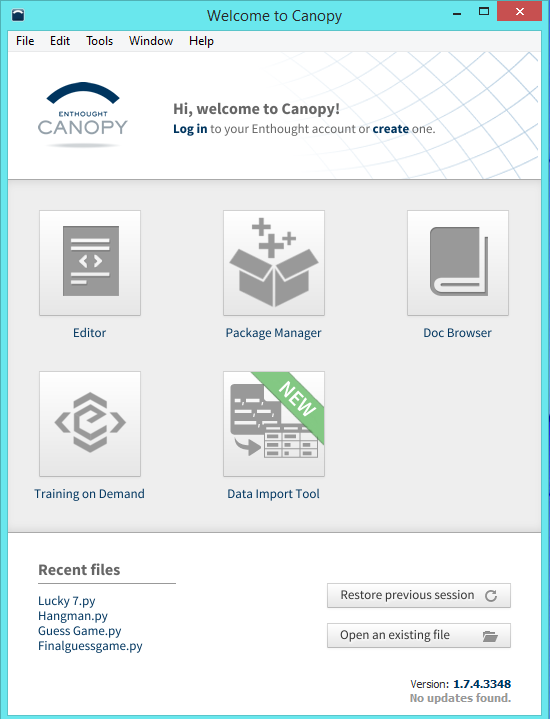
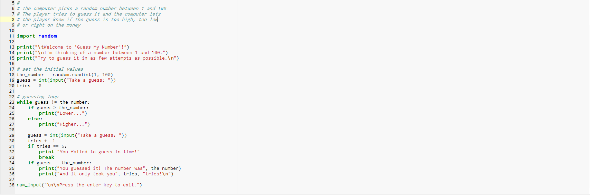
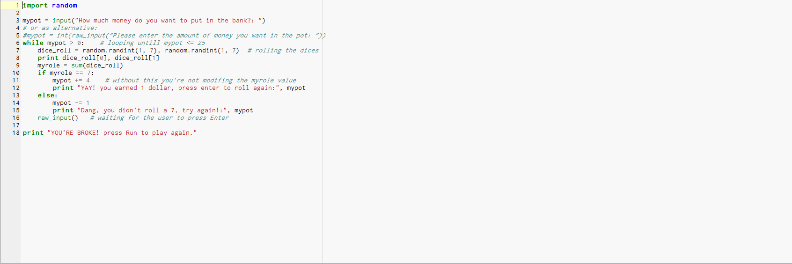

Portfolio
About me: I like playing with my dog and I also like playing video games. I like playing games like rainbow 6 seige and battlefield. I just recently got an Xbox One. I also have gotten my first dog 4 months ago, she is a terrier/mix and she is 6 months old right now. I live with my dad and grandma right now and my mom and brother are still in oklahoma. They will be moving here with us this summer.Me and my dad will be going back to oklahoma to get them and all of our stuff that we have over there, I can also use that time to go and meet my friends that I left over there.
Portfolio
About me: I like playing with my dog and I also like playing video games. I like playing games like rainbow 6 seige and battlefield. I just recently got an Xbox One. I also have gotten my first dog 4 months ago, she is a terrier/mix and she is 6 months old right now. I live with my dad and grandma right now and my mom and brother are still in oklahoma. They will be moving here with us this summer.Me and my dad will be going back to oklahoma to get them and all of our stuff that we have over there, I can also use that time to go and meet my friends that I left over there.


App Inventor:When I first started App Inventor I was really confused and lost, but once I started to get used to it, it just kinda became easy and fun!I made an app that is easy to use and time consuming. Its a drawing type game that you use when you are bored or just have nothing to do. When you are done drawing you just shake and the picture dissapears!The app is meant for anyone that is bored and has nothing to do.
App

Khan Academy:When we started khan academy, we were just learning the basics of html and css, at first no one really payed a lot of attention but then they started to realize that it was a lot of hard work and really confusing unless you payed attention to the videos. Khan Academy was, in my opinion, very helpful with html and css, it showed me the basics of html and css and it really helped me with the projects that followed khan academy.

GitHub: Git hube is a really cool and very confusing website when you first start, after a while when you start to understand the mechanics of the website it gets really easy and simple to use.Now when I use the website, I can browse around and explore things really easily.
GitHub

Notepad++:When we started making our websites we started on Notepad++, We needed to learn a lot of code but once you memorized the basic codes, the website just came to us. Notepad++ comes with a few features that really helped us with the website. When you start akinga code that Notepad++ recognizes, it gives you the option to click on a code that auto fills.
Notepad++

Notepad++:Canopy is another coding program used to make python code.At first it was a very confusing program, but after a while it's an easy program to make a python website.


 ">Home
IceCream
Index
">Home
IceCream
Index